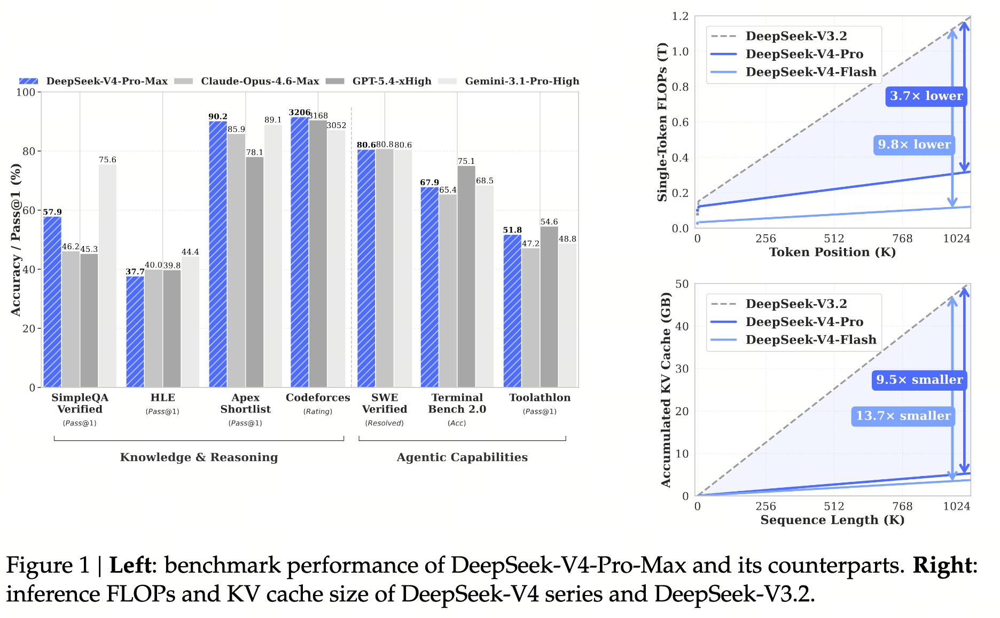
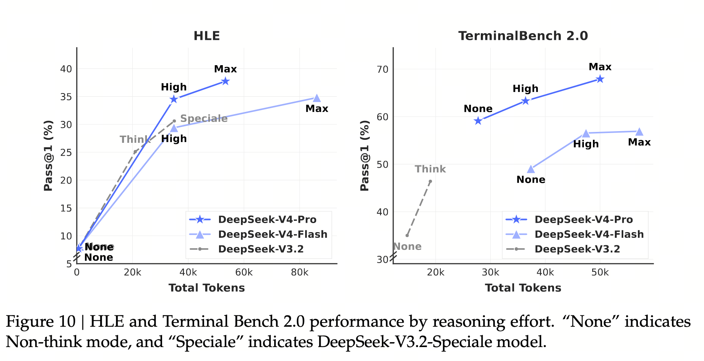
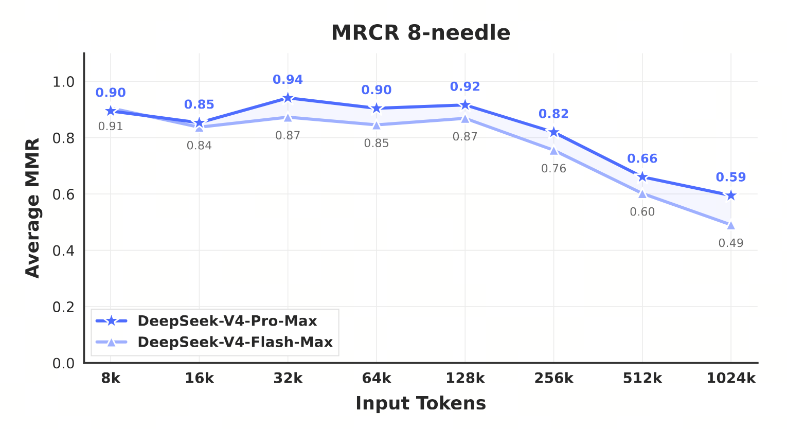
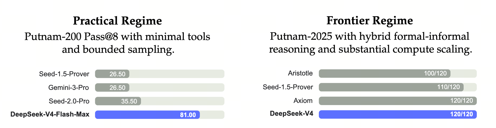
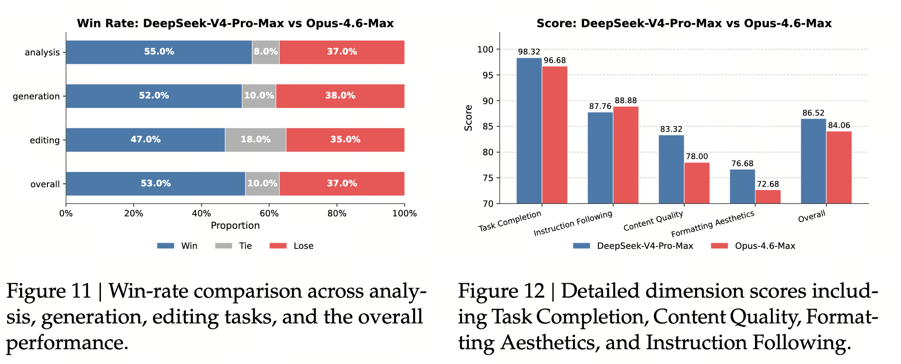

评测结果 — Benchmark 跑分与真实任务胜率
把 V4 与闭源旗舰 / 前代模型放进同一坐标系：知识 / 推理 / Agent / 长上下文 / 真实任务，五条战线一次列齐。所有引用的表格 / 图都标注论文具体 章节 + 页码，方便读者翻原文核对。
五条战线 = 知识 / 推理 / Agent / 长上下文 / 真实任务；前四条由 standard benchmark 衡量，最后一条由内部盲评 + 工程师问卷衡量
一句话：把 standard benchmark 的"客观分数"和真实使用的"主观胜率"分开看。 前者便于横向比较模型能力，后者补充真实使用中的主观偏好与任务通过率。两类评测回答的问题不同，不能互相替代。
- Reasoning Effort（推理强度）
- 同一模型支持三档：Non-think / High / Max（详见 Ch16），对应 RL 阶段不同 length penalty 与 context window。报告在相关评测表中区分这些模式，例如 “DeepSeek-V4-Pro-Max”。
- Pass@k / Pass@1
- k 次采样里至少 1 次答对的比例（k=1 即一发命中率）。在其它条件相同的情况下，Pass@8 比 Pass@1 更容易取得高分，因为 8 次中任意一次成功即可；代价是最多使用 8 倍采样预算。
- Pass Rate（DeepSeek 内部 Code Agent 评测）
- 论文 §5.4.4 的"Code Agent"任务通过率：从 50+ 工程师真实工单筛选 ~200 任务，人工评分后保留 30 任务作为评测集，跑通就计 pass。不是 Pass@1，是单次跑通率，因为每个任务可能涉及多文件 + 多步执行，重采样意义不大。
- MRCR（Multi-Round Coreference Resolution）
- 1M 长上下文 benchmark，在 8K–1M context 下测试 8-needle 多轮指代解析。V4 报告将指标记为 Average MMR，但没有在正文中展开缩写；这里不将其擅自定义为 mean reciprocal rank。
- HLE (Humanity's Last Exam)
- 2025 年推出的"前沿研究水平"高难度测试，覆盖数学 / 物理 / 化学 / 生物 / 历史 / 法律。对 reasoning effort 极敏感：Non-think 几乎全错，Max 模式下 V4-Pro 拿到 ~38%。
- Putnam Practical / Frontier Regime（论文 Figure 8, p. 40）
- 形式化数学的双轨设计：Practical（Putnam-200 Pass@8 + 最小工具 + 受限采样，测"工程友好"上限）和 Frontier（Putnam-2025 hybrid formal-informal + 大算力，测"理论可达"上限）。两轨同评，反映模型在受限与放开两种条件下的能力分布。
- Codeforces Rating（Elo）
- 基于 14 场 Codeforces Div. 1、共 114 道题的内部评测，并按标准 Codeforces 评级体系计算。V4-Pro-Max 得到 3206（论文 Table 6, p. 38），对应人类候选者第 23 名；表中 GPT-5.4 为 3052，Gemini-3.1-Pro 未报告 Codeforces 分数。
- SimpleQA-Verified
- 简单事实问答的核验版本，以精确答案衡量参数化知识表现。它能反映一部分事实准确性，但不能单独代表开放式回答中的总体幻觉率。
- Agentic Search vs RAG（论文 §5.4.2, p. 42）
- RAG：retrieval 一次后把结果喂给模型；Agentic Search：模型可迭代调用 search/fetch 工具直到满意。前者对应 Non-think 模式、后者对应 Think 模式。Agentic 版总成本仅略高于 RAG，但复杂任务提升显著（Table 9 vs Table 11）。
- 真实任务 / Real-World Task（论文 §5.4, p. 41-44）
- 论文专门构造的非 benchmark 评测：中文写作、搜索、白领任务、Code Agent 四类，由专业标注员或工程师做盲评 / 问卷，衡量 standard benchmark 不覆盖的体感维度（风格、礼貌、格式、上下文记忆）。
A.1 Benchmark 跑分（论文 §5.3, p. 36-41）
- 知识（论文 Table 6, p. 38）：SimpleQA-Verified 上比 GPT-5.4-xHigh、K2.6-Thinking 高 20+ 分，仍落后 Gemini-3.1-Pro-High（57.9 vs 75.6）。
- 推理（论文 Table 6, p. 38 + Figure 10, p. 41）：HMMT/IMO/Apex 接近 GPT-5.4，落后 SOTA 约 3-6 个月（论文 §5.3.2 自评）。
- Agent（论文 Table 6, p. 38 + Table 8, p. 44）：内部 Code Agent 评测中超越 Sonnet 4.5、接近 Opus 4.5；Codeforces Elo 3206。
- 长上下文（论文 Figure 9, p. 40）：MRCR 1M 上 83.5（Gemini-3.1-Pro 76.3，Opus 4.6 92.9）；CorpusQA 1M 上 62.0。
- 形式化数学（论文 Figure 8, p. 40）：Putnam-2025 在 hybrid formal-informal 设置下拿下完美 120/120。

1. 三档 reasoning effort 的代价曲线（论文 Figure 10, p. 41）

论文 Figure 10（p. 41）的 HLE 与 TerminalBench 2.0 曲线：Non-think → Think High → Think Max 三档 token 成本接近线性，但 Pass@1 增量显著。这条曲线说明三件事：
- Max 不只是多生成 token：三档在 RL 中使用不同 length penalty、context window 和 response format，Max 还加入特殊 system prompt；8K / 128K / 384K 是评测窗口。
- 同一 reasoning budget 下，V4 的 token 利用率高于 V3.2-Speciale（论文 Figure 10 中 V3.2-Speciale 的 None/High 点位明显低于 V4 同等档）；
- Flash-Max 与 Pro-Max 在简单任务上几乎重合，复杂任务（如 Apex / HLE）才显著拉开。
设单 token 解题贡献的边际信息为 $\Delta I(t)$，则总解题概率 $P(\text{pass}) \approx 1 - \exp\!\big(\!-\!\sum_t \Delta I(t)\big)$：
- 低 budget 下：每个 think token 都做新工作（探索新分支），$\Delta I$ 大；
- 高 budget 下：模型已经把主要 lemma 推完，剩下 token 在验证 / 重述，$\Delta I$ 衰减；
- 所以 Pass@1 随 budget 是对数饱和形，不是线性 —— 这就是 Figure 10 曲线的形状根源。
实际意义：困难任务在更高 reasoning effort 下仍可能受益，简单任务则可能出现边际收益递减。报告说明三档在 RL 中采用不同 length penalty、context window 与 response format，但没有说它们是三个独立发布 checkpoint。
2. MRCR 1M 衰减曲线（论文 Figure 9, p. 40）

论文 Figure 9（p. 40）展示 V4 在 MRCR 8-needle 任务上从 8K 到 1M 的衰减。Pro-Max 在 8K~128K 区间稳定在 0.85+，256K 后明显下滑，1M 时降至 0.59（Flash-Max 同长度从 0.87 衰减到 0.49）。
- 8K → 32K：0.90 → 0.94（图中峰值）；图表没有解释这段上升的具体原因；
- 32K → 128K：0.94 → 0.92，平稳；
- 128K → 256K：0.92 → 0.82，开始衰减；
- 256K → 1M：0.82 → 0.59，急降 23 个百分点。
3. 形式化数学：Putnam 双轨制（论文 Figure 8, p. 40）

| 设置（论文 Figure 8） | 含义 | V4-Flash-Max | 对照 |
|---|---|---|---|
| Practical Regime | Putnam-200 Pass@8，最小工具与有限采样 | 81.0 | Seed-2.0-Prover 35.5 / Gemini-3-Pro 26.5 |
| Frontier Regime | Putnam-2025 hybrid formal-informal + 大算力 | DeepSeek-V4：120/120（报告未标为 Flash-Max） | Aristotle 100/120 / Axiom 120/120 |
Practical 设置下 Flash-Max 得到 81.0，并非满分；Frontier 设置下 DeepSeek-V4 得到 120/120，与 Axiom 并列。两项结果使用不同题集、工具和计算预算。
4. 与闭源旗舰对比（论文 Table 6, p. 38）
论文 Table 6（p. 38，本附录节选 Pro-Max 对比 vs 闭源旗舰）：
| Benchmark | Opus-4.6 Max | GPT-5.4 xHigh | Gemini-3.1-Pro High | DS-V4-Pro Max |
|---|---|---|---|---|
| MMLU-Pro (EM) | 89.1 | 87.5 | 91.0 | 87.5 |
| SimpleQA-Verified (Pass@1) | 46.2 | 45.3 | 75.6 | 57.9 |
| GPQA Diamond (Pass@1) | 91.3 | 93.0 | 94.3 | 90.1 |
| HLE (Pass@1) | 40.0 | 39.8 | 44.4 | 37.7 |
| LiveCodeBench (Pass@1) | 88.8 | — | 91.7 | 93.5 |
| Codeforces (Rating) | — | 3168 | 3052 | 3206 |
| HMMT 2026 Feb (Pass@1) | 96.2 | 97.7 | 94.7 | 95.2 |
| Apex Shortlist (Pass@1) | 85.9 | 78.1 | 89.1 | 90.2 |
| SWE Verified (Resolved) | 80.8 | — | 80.6 | 80.6 |
| MRCR 1M (MMR) | 92.9 | — | 76.3 | 83.5 |
| BrowseComp (Pass@1) | 83.7 | 82.7 | 85.9 | 83.4 |
| HLE w/ tools (Pass@1) | 53.1 | 52.0 | 51.6 | 48.2 |
V4-Pro-Max 在 LiveCodeBench、Codeforces 与 Apex Shortlist 上表现很强，但各闭源模型并非每项都有报告值，不能概括成同时“压过所有闭源旗舰”。论文称，这是开源模型首次在这类编程竞赛任务上达到闭源模型的可比水平。知识类仍落后部分领先闭源模型，MRCR 1M 也低于 Opus 4.6（83.5 vs 92.9）。报告根据标准推理基准的相对表现判断，与前沿模型约有 3–6 个月差距。
5. V4 自身三档对比（论文 Table 7, p. 39）
同款 Flash / Pro 在 Non-Think / High / Max 三档下的全 benchmark 表现，论文 Table 7（p. 39）。最显著的"档位拉大"出现在知识与推理类：
| Benchmark | Pro Non-Think | Pro High | Pro Max | 从 Non→Max 提升 |
|---|---|---|---|---|
| SimpleQA-Verified | 45.0 | 46.2 | 57.9 | +12.9 |
| HLE (Pass@1) | 7.7 | 34.5 | 37.7 | +30.0 |
| Codeforces Rating | — | 2919 | 3206 | +287 |
| HMMT 2026 Feb | 31.7 | 94.0 | 95.2 | +63.5 |
| Apex Shortlist | 9.2 | 85.5 | 90.2 | +81.0 |
| MRCR 1M (MMR) | 44.7 | 83.3 | 83.5 | +38.8 |
| SWE Verified | 73.6 | 79.4 | 80.6 | +7.0 |
不同 benchmark 对 reasoning effort 的敏感度不同：部分数学、代码与推理任务提升更明显，知识或工程任务的增幅较小。具体差值应按各表中的模型和指标读取，不能由此概括所有“难任务”。
A.2 真实任务胜率（论文 §5.4, p. 41-44）
标准 benchmark 在准确率上能拉开排名，但用户体感里"是否好用"还包括风格、礼貌、格式、上下文记忆、工具协调。论文 §5.4（p. 41-44）专门构造了 4 类非 benchmark 评测来覆盖这些维度。
1. 中文写作（论文 §5.4.1, p. 41-42）
对比基线 Gemini-3.1-Pro，DeepSeek-V4-Pro 表现：
| 维度 | 胜率 | 论文出处 | 说明 |
|---|---|---|---|
| Functional Writing 综合胜率 | 62.7% vs 34.1% | Table 12（§5.4.1, p. 41） | Gemini 在中文场景下偏好 override user 显式要求，V4 更"听话" |
| Creative Instruction Following | 60.0% | Table 13（§5.4.1, p. 41） | 边际优势 |
| Creative Writing Quality | 77.5% | Table 13（§5.4.1, p. 41） | 显著优势 |
| vs Opus 4.5（最难子集） | 45.9% vs 52.0% | Table 14（§5.4.1, p. 41） | 高复杂度 / 多轮约束下 Opus 仍领先 |
2. 搜索：RAG 与 Agentic Search 的双轨（论文 §5.4.2, p. 42）
DeepSeek Chat 的两种搜索模式分别对应两种 reasoning 模式：
- Non-think 模式 → RAG：传统 retrieval-augmented；论文 Table 11（§5.4.2, p. 42）报告 V4-Pro 全面优于 V3.2，单值搜索与"规划+策略"任务上提升最大；
- Think 模式 → Agentic Search：模型可迭代调用 search/fetch 工具，按"thinking budget"安排；论文 Table 9（§5.4.2, p. 42）显示总成本仅比 RAG 略高（Table 10, §5.4.2, p. 42 给出成本对比），但复杂任务提升显著。
3. 白领任务（论文 §5.4.3, p. 42-43）

30 个高级 Chinese Professional Workflows，覆盖金融、教育、法律、科技等 13 行业，由专业标注员对 V4-Pro-Max vs Opus-4.6-Max 做盲评。论文 Figure 11（§5.4.3, p. 43）提供胜负平分布：
| 子类（论文 Figure 11, p. 43） | 胜 | 平 | 负 | 非负率 |
|---|---|---|---|---|
| 分析类（analysis） | 55% | 8% | 37% | 63% |
| 生成类（generation） | 52% | 10% | 38% | 62% |
| 编辑类（editing） | 47% | 18% | 35% | 65% |
| 综合（overall） | 53% | 10% | 37% | 63% |
论文 Figure 12（§5.4.3, p. 43）按四个维度做明细评分：V4-Pro-Max 在 Task Completion（98.32 vs 96.68）与 Content Quality（83.32 vs 78.00）占优；Instruction Following（87.76 vs 88.68）略输 Opus；Formatting Aesthetics（76.68 vs 72.68）整体仍有提升空间，论文明确指出 slide-style 视觉设计偏弱（Figures 13-15, §5.4.3, p. 43 给出真实输出样张）。
4. Code Agent（论文 §5.4.4, p. 44, Table 8）
论文从内部 50+ 工程师真实工单里筛选 ~200 个任务，覆盖 PyTorch / CUDA / Rust / C++ 的 feature / bugfix / refactor / 诊断；人工评分后保留 30 个作为评测集（Table 8, §5.4.4, p. 44）。
| 模型 | Pass Rate (%) |
|---|---|
| Haiku 4.5 | 13 |
| Sonnet 4.5 | 47 |
| DeepSeek-V4-Pro-Max | 67 |
| Opus 4.5 | 70 |
| Opus 4.5 Thinking | 73 |
| Opus 4.6 Thinking | 80 |
论文 §5.4.4（p. 44）报告：内部问卷（N=85 工程师）显示 52% 表示愿意把 V4-Pro 作为日常默认编码模型，39% 倾向支持，< 9% 反对。
读图法：雷达图五轴是五条战线 —— 知识 / 推理 / 长上下文 / 编码 / Agent 工具。每轴数据是该战线上最具代表性 benchmark 的标准化分数（来自论文 Table 6, p. 38；MRCR 来自 Figure 9, p. 40）。
切换不同对手按钮看：vs Gemini，V4 在编码大幅领先、知识落后；vs GPT-5.4，V4 推理基本持平、编码领先；vs Opus 4.6，V4 编码持平 / 略胜、长上下文落后约 9 分。三条战线上的领先程度差异正好对应论文 §5.3.2（p. 38）"3-6 个月差距"的非均匀分布。
- 偶尔出现 trivial mistakes（小错误、低级 bug）；
- 对模糊 prompt 的"过度推理"—— 容易把简单任务做成复杂任务；
- slide / 视觉版面设计能力一般（论文 Figures 13-15, p. 43）；
- 条件复杂的多轮 instruction following 仍弱于 Opus 4.5（论文 Table 14, p. 41 显示最难子集胜率 45.9% vs 52.0%）。
A.3 一句话总结
V4-Pro-Max 在代码竞赛评测上达到与领先闭源模型可比的水平，Codeforces 评级为 3206；在知识类和 1M 长上下文评测上仍有明显差距。论文依据标准推理基准判断其与前沿模型约有 3–6 个月差距。真实任务评测中，V4 在部分中文写作与 Code Agent 设置上表现突出，而低级错误、复杂多轮指令遵循和视觉版面设计仍是短板。